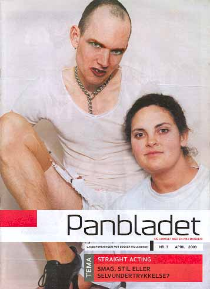
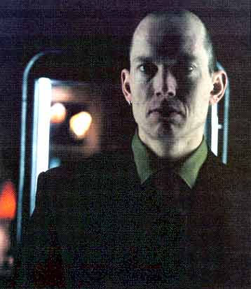
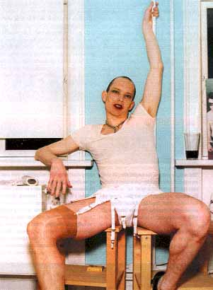
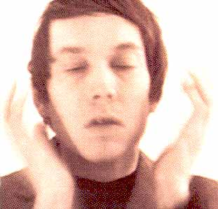

| April 2003 |

| BETRAGTNINGER FRA EN FØLSOM FISK | |
| EVERY MAN MUST PLAY HIS PART |
|
| Skribent | Sune Prahl Knudsen |
| Dialog | sune@panbladet.dk |
| Tema | Straight acting |
| Fotoserie | Malle Gilbert |
"The merchant of Venice" skriver "The world's a stage - where every man must play his part", gør han meget rammende opmærksom på, at det er et menneskeligt vilkår at spille en rolle, hvis man vil deltage i samfundet.
Det gælder for alle mennesker af alle seksualiteter. Desværre bliver nogen af forskellige årsager tvunget til at indtage roller, de egentlig ikke kan identificere sig med eller føler sig fremmedgjorte overfor". Sådan lægger miss fish ud, da vi spørger til, hvad acting - og straight acting - er for en størrelse.
Men spiller alle altid roller?
"En strategi at hævde, at man slet ikke spiller nogen rolle. At man er "naturlig" ligesom alle andre mænd og kvinder. Men hvad er naturligt? En af de ting der adskiller os fra dyrene er netop, at vi - som en del af vor "naturlighed" - er i stand til at kommunikere ved at spille roller i forhold til hinanden. Søger man den naturlige biologiske drivkraft til seksualiteten, uanset dens karakter og præferencer, havner man i krybdyrhjernen. Det handler om mad, sex og overlevelse. Nok er vi dyr, men vi er mere end det. Vi er kulturelle dyr. Konsekvensen af denne strategi bliver altså en slags kulturfornægtelse.
Seksualitet er en af menneskets fundamentale drivkræfter, som har afgørende betydning, når vi socialiserer os. Nogle gange er ens seksualitet så styrende, at den får en til at bryde med den gældende norm og hvis man fornemmer, at ens fremtoning er upassende eller overskrider andres grænser, må man "spille en rolle" - for at blive indenfor normen. Det er kernen i straight acting".

"At være homoseksuel drejer sig om essentielle valg baseret på seksualitet og følelser, som andre ikke per automatik forstår. Det at acte - eller at spille en rolle - er at give andre mulighed for at forstå disse valg og følelser. Det er altså et spørgsmål om, hvordan man forstår sig selv i samfundet og sin egen seksualitet og hvordan samfundet opfatter, hvem man er. Den proces er vigtig. Og man kan ikke springe den over ved at sige, at man ikke acter - så lukker man bare øjnene og tager en masse ting for givet.
Hvis man som homoseksuel siger, at man er naturlig - eller bare er sig selv - så må man stille spørgsmålet: Hvad er det naturlige - er det at være som en heteroseksuel? De har godt nok biologien og tusinder års tradition i ryggen, som belæg for at udgøre normen og de har flertallet i orden. Men er det rimeligt, at hvis man er mange nok og har gjort noget over langt tid, så er det naturligt? Med et minimum af historisk viden er man dog klar over, at skiftende tider har haft skiftende kulturelle normer for, hvad der var "naturligt" - også for heteroseksuelle. Der var f. eks. en periode i renæssancen, hvor det var på mode blandt mænd at græde offentligt.
Det er vigtigt at være bevidst om, at man acter og finde nogle udtryk for det. Det kræver intelligens og kreativitet at finde en "væren-i-verden", når man lever uden for de normer, som findes i ens tid. Det er der nogle, der ikke magter, evner eller har lyst til og i stedet gør enormt meget for at falde indenfor normen.
De mennesker der på den måde straight acter, gør det af forskellige årsager. Det kan være taktisk, for man kan opnå enormt mange ting ved at efterleve en norm. Så har man et udtryk, som folk kan forstå - modelleret over hetero parforhold, familie og følelser, som man kender fra film og de dominerende relationer mellem heteroseksuelle. Det kan der være noget smart i og det bliver i hvert fald nemmere at integrere sig og være med i verden.
Problemet er bare, at hvis man er rigtig straight acting, så forstår
folk jo i virkeligheden slet ikke, at man har sin egen seksualitet og
sit eget følelsesregister. Så udsletter man faktisk sin egen
identitet - folk der er straight acting løber den risiko, ikke
at give sig selv lov til at udforske deres identitet og finde ud af hvem
de selv er. Det er trist."
Men findes der ikke forskellige måder at være straight
acting på?
"For det første har man skræmmebilledet af den selvundertrykkende
skabsbøsse, der ender i et dobbeltliv og lever sin seksualitet
ud i et miljø, som andre, der ikke er straight acting, har skabt
for dem. Det bliver en form for nasseri og kan også blive ret hyklerisk.
Blandt denne slags mennesker opbygges typisk også logeagtige netværk,
hvor alle godt ved, at man er homoer, men så snart man ikke er straight
acting mere, bliver man udstødt. Mange mennesker, der har indflydelse
og magt, arbejder indenfor en sådan konstruktion. Nogen vælger
det af karrieremæssige årsager, for hvis man skal være
dommer eller politimester og skal indtage andre arketypiske stillinger
i samfundet, er det svært at træde frem som bøsse.
Det er ganske vist blevet nemmere. Eksempelvis er borgmesteren i Berlin
bøsse - men vel at mærke en meget, meget straight acting
bøsse.
For det andet har man den åbne homo, som efterlever den heteroagtige norm - som er åben, men som kopierer den heteroseksuelle leveform. Det er måske især den type homoer, som føler, at de bare er naturlige. Deres borgerlige normer, kærlighedsliv og intentioner bliver fint reflekteret af de rammer, der findes allerede. Det må jo være dejligt at have det sådan, at bare det at samfundet accepterer homoseksualitet, er nok. Problemet med det er, at de ofte er undertrykkende og nedvurderende overfor andre, der mener, at målet endnu ikke er nået, og beskylder dem for at være skabagtige og tegne et dårligt billede af homoer.
For det tredje findes der dem, der prøver at efterleve heteroseksuelle normer, men ikke er særligt gode til det, og som falder igennem - som gerne vil være straight acting, men ikke helt kan klare det. Og i deres selvforståelse gerne vil finde en kæreste, leve et pænt styret heteroseksuelt liv, men hele tiden falder igennem. "Min stemme er lidt for skinger, jeg har nogle lidt for feminine træk og jeg kan godt lide at gå i saunaen. Jeg er faktisk ikke monogam, men er hele tiden rastløs, fordi jeg forsøger at leve op til et billede af mig selv som monogam". På den måde kan man komme i en situation, hvor man aldrig bliver tilfreds. Man fortryder hele tiden det man gør og risikerer at ende i evigt selvhad og bedrag. Man kommer til at virke evigt undskyldende og tæt på den selvundertrykkende skabsbøsse, men en gang imellem bryder man måske igennem og bliver åben homo - kommer for eksempel alligevel til at sige det til kollegaerne på arbejdspladsen, når man er lidt fuld. Måske er det eneste man opnår at blive til grin."

"Det kan resultere i en masse hykleri. Jeg bliver sur over, når folk render rundt med en falsk selvforståelse og dømmer og skaber dårligere vilkår for andre mennesker. Det er nemt nok for dem, der er i overtal, at sige "du skal ikke skabe dig, du skal bare være naturlig". Men fordi man selv har sit på det tørre, skal man ikke gå ud fra, at alle andre har det. Det gælder i alle livets forhold. Der er altid nogen, der kommer i klemme. Hvis der er en, der er androgyn og har fundet et smukt udtryk for det som han har det godt med, så vil de fleste straight acters tage afstand fra det som hysterisk og opkørt, fordi det kan ses som et angreb på deres integritet. Der ligger et diktatur i det. Det er som en klub og hvis den klub var meget lille eller ikke havde nogen indflydelse, kunne det også være ligegyldigt, for så ville de, der levede sig selv ud og selv sætter dagordenen ikke have noget problem. Men ved at være staight acting får du en masse fordele og sidder i mange sammenhænge på magten. Der er nogen, der ikke kan inkassere disse fordele - enten af rent taktiske grunde eller fordi de ikke har mulighed eller behov for det - og dem skal der ikke trædes på.
Og den der med og rende rundt og være naturlig går altså kun, når man er i et miljø, hvor man har fået en masse foræret. For at komme dertil skal man være klar over, at der er en masse, der har kæmpet for, at man er kommet derhen. Som rødstrømperne i halvfjerdserne der gik ned brysteholderne uden på tøjet. Andre folk gjorde grin med dem, men 20 år efter har det betydet, at kvinder bliver accepteret på en ny måde og - i hvert fald til en vis grad - kan slappe af. På samme måde med homoer. De mennesker der startede med at være åbne homoer og kæmpe, er med til at gøre det muligt for andre at sige, at det bare er naturligt. Og det tænker folk ikke på.
Endeligt synes jeg også, at straight acting er enormt begrænsende. Uden at ende i filosofisk dialektik så kan man sige, at straight acting er en negativ definition af det at være homo - man definerer sig udfra noget, som man ikke er, hvorimod en etableret bøsse siger: sådan er jeg, sådan lever jeg, sådan dyrker jeg sex osv. Når man skaber noget og lægger det åbent frem, er der andre der kan forholde sig til det, og så skabe noget andet . D r ud af opstår der en udvikling. Men hvis man er straight acting, så sidder man i en situation, hvor andre jo ikke kan forholde noget til noget, man ikke er. Hvis man sætter ingenting mod ingenting, får man ingenting - og denne ingenting er for frustrerende og kedelig at forholde sig til. Man bliver nødt til at investere noget eller tage en konflikt for at få gang i noget og det gør straight acters ikke. De tager ikke reelle valg med konsekvenser for deres "væren-i-verden". Man bør tage valg - valg som kan omsættes til en positiv kultur". Her skal man selvfølgelig passe på med at være fordømmende og frelst. Straight acting kan også være en nødvendighed og et skridt i en udvikling - eksempelvis familiær hensyntagen - uden at den pågældende skal føle sig skyldig i at undertrykke andre. At man undertrykker sig selv, må man i princippet selv om, hvis det ikke får konsekvenser for andre."
Men kan der slet ikke være noget positivt ved straight acting?
"Det kan jo fungere som en fetich . Alt hvad der er forbudt og ligger
under overfladen har altid været utroligt spændende og det
kan samtidigt ses som en dyrkelse af den rene maskulinitet. Det kan der
være noget sexet over og det er der også mange, der spiller
på. "Vi er nogle rigtige mænd på den her arbejdsplads,
der godt ved, at hinanden er bøsser, men ingen andre ved det og
så til julefrokosten går vi ud på lokummet og boller
sammen og det er der ingen andre, der ved noget om". Der er noget
maskulint ved at køre sådan nogle games og der er helt sikkert
nogen hvis seksualitet ligger der.
Det er sådan set også fint nok, men problemet er, at fascinationen af det maskuline tit bygger på den heteroseksuelle model. Man overtager rollerne fra heteroerne, hvor alt skal opfattes i mand og kvinde. Det maskuline som værdi er kopieret ukritisk fra hetero- til homoverdenen og på den måde er det som om kønsdiskussionen ikke er nået til homomiljøet. Det er bl.a. derfor, at jeg til mine performances har opfundet en figur, som er delvis kvinde, delvis mand og delvis fisk: noget helt fjerde. Jeg vil skabe et nyt rum for at forstå køn, seksualitet og identitet i stedet for hele tiden at blive målt udfra om man er maskulin eller feminin. Det hele er ikke sort/hvidt og det er nuancerne, der er det interessante".

"Der er mange, der siger, at bare fordi man vil leve sig ud som homoseksuel, hvorfor skal man så være venstreorienteret eller skilte med det. Og det skal man heller ikke nødvendigvis, men hvis du skal tage din identitet og seksualitet alvorligt, så ligger der iboende i den en kritik af det borgerlige samfund og det kan man ikke undgå. Du bryder med nogle normer, som er etableret for at fastholde det borgerlige system. Men i Danmark gælder det om at acceptere den pæne veluddannede socialdemokratiske norm om velfærdssamfundet og at der er plads til alle. Indordner du dig og gør du din pligt kan du kræve din ret. Så kan du også blive en pæn velintegreret homoseksuel.
Men folk der stritter ud, møder ikke respekt. Andre folk gør nar ad dem, med mindre de er kendte. Ellers flygter de til udlandet - hvorfor tage den kamp her, når man møder respekt andre steder. Selv dronningen siger, at her ikke er særligt højt til loftet og at danskere er fjendske overfor fremmede kulturer. "Dem kan man ikke lære noget af. Det er nogen, der er imod os. Nogle der vil os ondt - og lave os om". Og hvis du lever som homo og ikke passer ind i en straight acting norm, så bliver du jo også ramt af den tankegang. Derfor lægger det nærmest op til, at man vælger at indordne sig, hvis man ikke vil tage balladen. I Danmark er der kun bedst plads til streng fornuft og hård porno. Vi har nogle regler, som vi kan holde os til og så ellers købe noget sex i en butik. Hele det register, der er imellem, er ikke så veludviklet. Hellere noget dårligt og middelmådigt, som man kan blive enige om end det, man ikke lige kender eller kan forstå og som måske har nogle usikre konsekvenser. Straight acting er som skabt til et sådan samfund".
Reference:
www.panbladet.dk/artikel/48
Print denne side